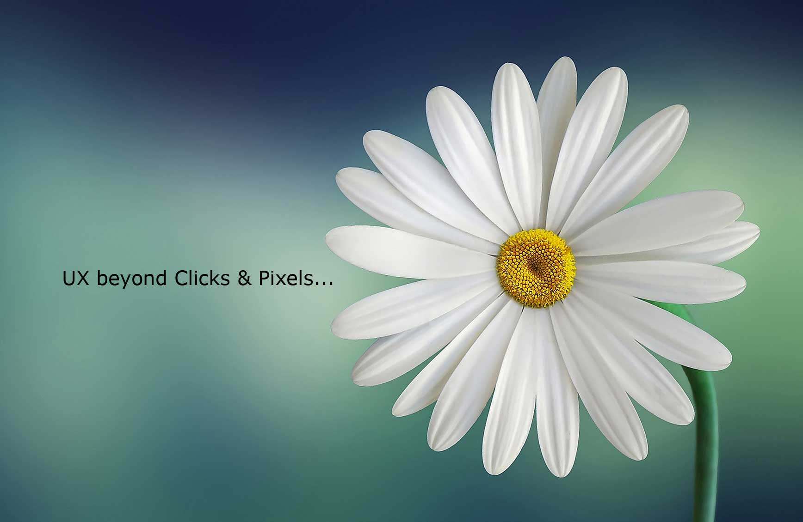

Home page of Sebbe, User Experience Designer
Logo and Contact Email
Home page of Sebbe
Email me
Website Navigation Menu
About
Projects
Resume
Professional UX Design, based on UX Research

UX beyond Clicks and Pixels.